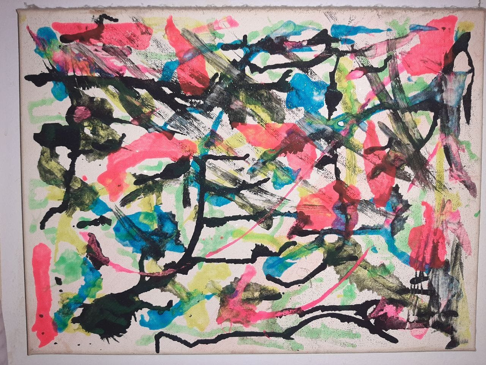
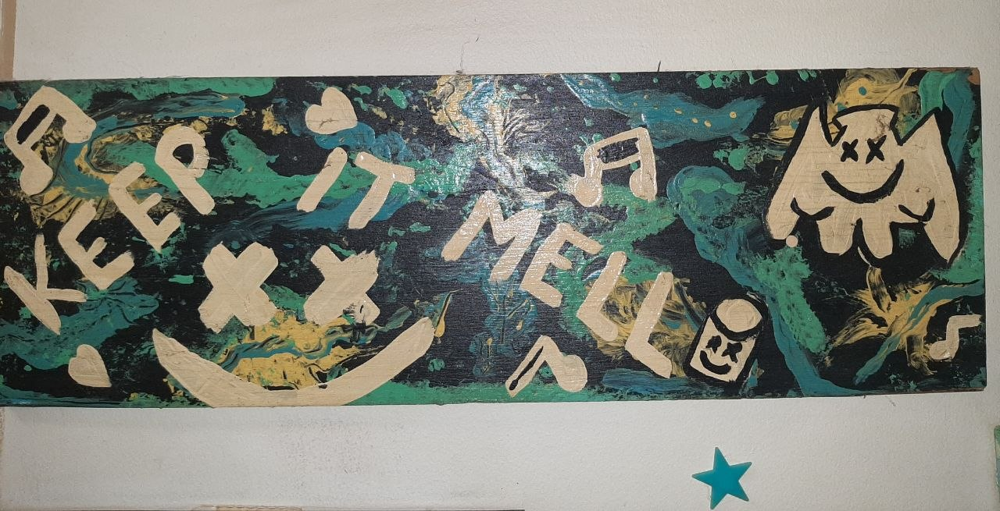

About Abstract Emporium
The making behind the candles, the knits, and the paint.


Process crumbs — knit + pour (candle photo soon)
I guess you could say I had a creative side growing up — I just never really explored it, and didn't think I could. I remember making these little bookmarks as a kid, drawing them up and colouring them in with all sorts of wacky colours. That was about the extent of it.
Then the teens came, and work, and figuring out what I wanted to do with my life. The creativity pretty much went to the wayside. It wasn't really a part of how I saw myself.
A real parade of side quests started in my late 20s — some big changes in my life. And then one afternoon, on a day off work, I just decided to grab some paint and spread it all over the place. I remember making a total mess out of paint, and how much fun that was. That's where it started — going down rabbit holes of different mediums, learning to use a heat gun to pull the cell effects in fluid acrylics.
12 Years of Creativity — From Sketchbook Kid to Handmade Business
I still have those first four paintings — each standing on its own — from when I first started, over twelve years ago. They're still with me. What began as messy fluid pours and playing with light and texture has grown into the full Abstract Emporium you see today: the same hands that made those early paintings now pour every candle, knit every slipper, and keep creating one-of-a-kind art. No AI. No mass production. Just making things by hand in Thunder Bay, the way I’ve always loved.
→ See “Where It All Began — 12 Years of Creativity” on the Art page
Personal Gallery — Pours on My Walls
Canvas pours on my walls — the private stash that started it all.

Wood pours with glow stars — same creative thread from the first messy experiments.
Want something of your own on the wall — or cozy knits for the same Thunder Bay hands?
Celestial Drift — for sale now Personal stash (showcase) Lissa's Knitting ready stock
Sold Works
See current works at the Art Emporium gallery →
Complete the cozy experience
Pair your candle with handmade knit slippers — or the one original on the wall right now. Knitting → · Celestial Drift → · Z3NW1CK →